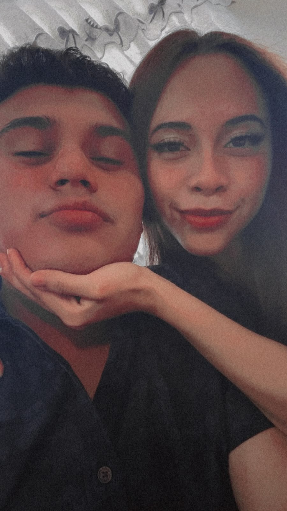
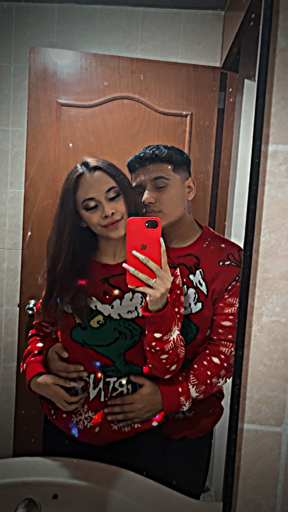
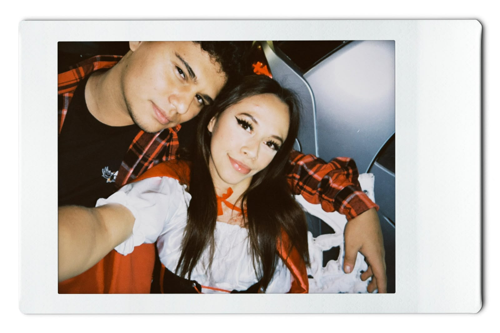
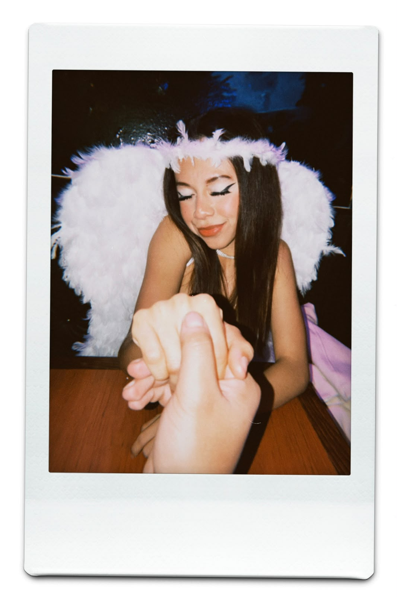
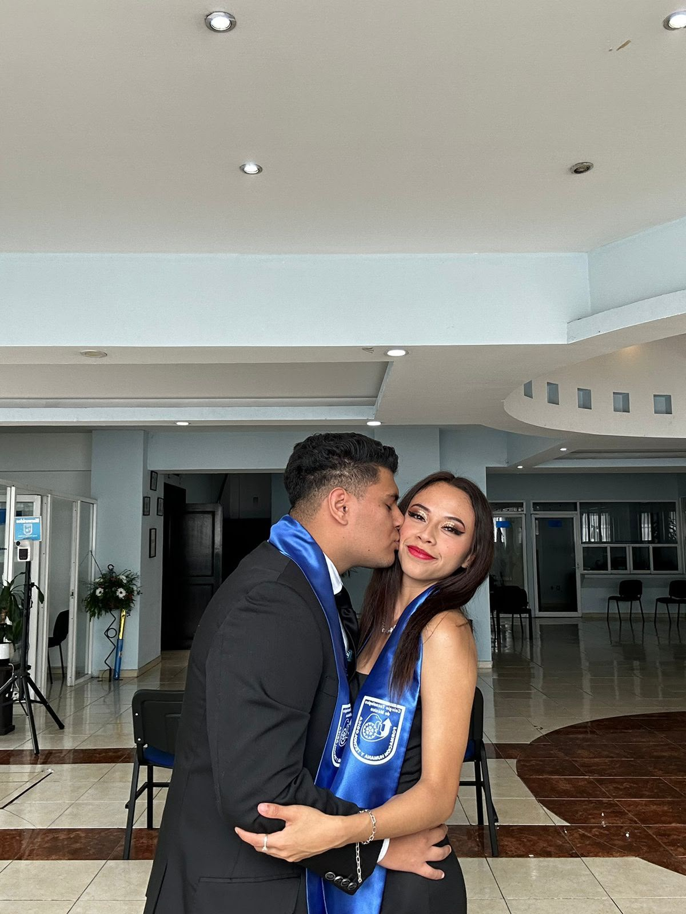

¿Y si lo intentamos de nuevo? No para hacer como si nada hubiera pasado, sino para hacerlo diferente. Para aprender de lo que nos hizo daño, hablar cuando algo nos moleste y volver a construir poco a poco todo eso que alguna vez nos hizo tan felices. No te prometo que todo será perfecto, pero sí que esta vez quiero hacerlo bien. 💗

No quiero volver al pasado, quiero empezar algo nuevo contigo, pero sin olvidar lo que aprendimos. Quiero volver a conocerte, volver a reír contigo y volver a sentir esa tranquilidad que sentía cuando estábamos bien. Quizá todavía tengamos una oportunidad. Quizá todavía podamos intentarlo una vez más. 🌸

Sé que después de todo lo que pasó no es fácil simplemente volver. Pero tampoco quiero quedarme con la duda de qué habría pasado si los dos hubiéramos intentado una vez más. Si todavía existe un poquito de cariño, me gustaría que nos diéramos la oportunidad de empezar de nuevo, despacio y sin presiones. 💗

No te estoy pidiendo que olvides todo de un día para otro. Solo te estoy pidiendo una oportunidad para demostrarte que aprendí de mis errores. Quiero que, si algún día volvemos a intentarlo, no sea para repetir nuestra historia, sino para escribir una mucho más bonita. 🌸

Si pudiera pedir un solo deseo, sería volver a tener una oportunidad contigo. No para borrar nuestros errores, sino para demostrarte que podemos aprender de ellos. Quiero que esta vez nos elijamos incluso en los días difíciles, que hablemos en lugar de alejarnos y que cuidemos lo que tenemos. ¿Lo intentamos de nuevo? 💕
Como podría dejar de amarte si, cada vez que mis ojos se encuentran con los tuyos, mi corazón estalla dentro de mí. 💕

Entonces... ¿lo intentamos de nuevo? 🥺
Posdata: 💌
Dame la oportunidad de demostrarte que podemos seguir, amor. Sé que las cosas son difíciles, pero podemos con esto. Solo te pido una oportunidad, una última, mi niña, por favor. ❤️